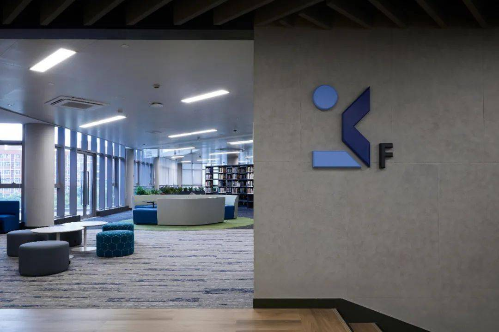

Who We Are
We have reformed the teaching building
We renovated the school and added many new buildings.
We renovated the school's corridors, classrooms, and added many new public spaces.
Our History
- 2016 -
The university accelerates the digital transformation of education, helps first-class talent training and scientific research, connects the "ring" interconnection cable between campuses, empowers the discipline intelligent computing service sharing platform (phase II), and promotes the construction of IPv6-based campus Internet of Things, four-center integration, and 5G campus
- 2009 -
The university has signed inter-university cooperation agreements with 78 universities or institutions in 288 countries and regions, and 899 international students studying in 9293 countries and regions around the world, including 3766 international degree students.
- 2008 -
Our scientific research ability and level are among the best among the advanced universities in China. Engineering Science, Materials Science, and Chemistry have entered the 2‰ ESI disciplines worldwide. In 2004, 7 people were selected as "Global Highly Cited Scientists". As the first completion unit/first completer, he has won 8 second prizes of the National Natural Science Award, 9 second prizes of the National Technological Invention Award, 70 second prizes of the National Science and Technology Progress Award, and 3 outstanding scientific research achievements in colleges and universities of the Ministry of Education (including <> first prizes).
- 2004 -
Our university is one of the 38 national pilot universities, one of the first universities of the Ministry of Education to implement the "Excellent Engineer Education and Training Program", and one of the "Excellent Journalism and Communication Talents Education and Training Program 3.0" implemented by the Ministry of Education.
- 1994 -
Our school was created, and after the departmental adjustment of the national higher education institution, the university has become a first-class national key university.
School Theme
Teachers and students progress, all-round development, cultivate talents.
The following specific aspects:
 Enhance students' skills for comprehensive development
Enhance students' skills for comprehensive development- Enable students to understand their goals
- Having sufficient ability to survive in society
- Having sufficient moral character
- Bringing the workplace closer and practicing teaching
- Cultivate confidence and enhance initiative
- Provide targeted employment psychological guidance
- The model of students working directly in enterprises after graduation